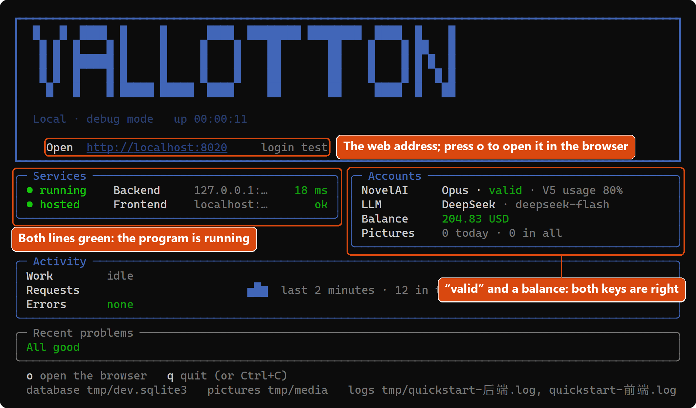
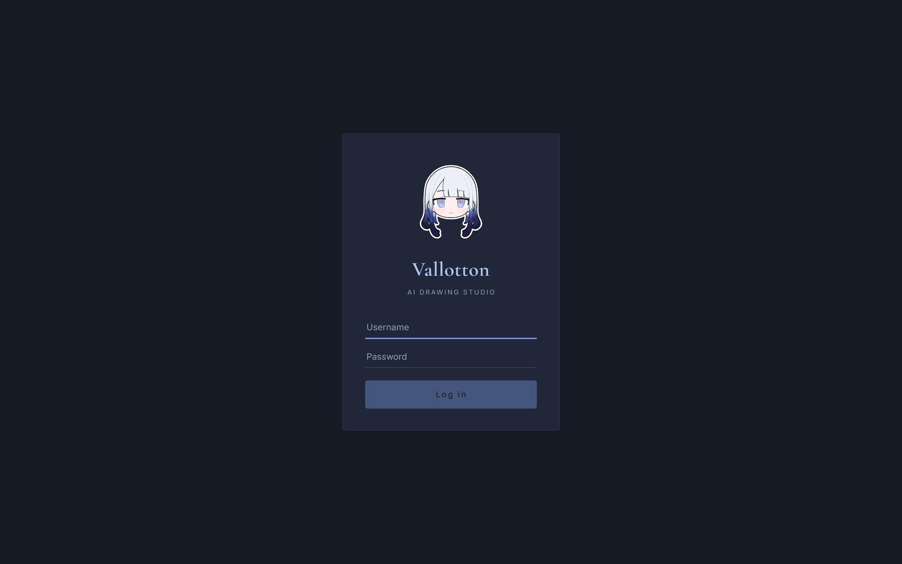
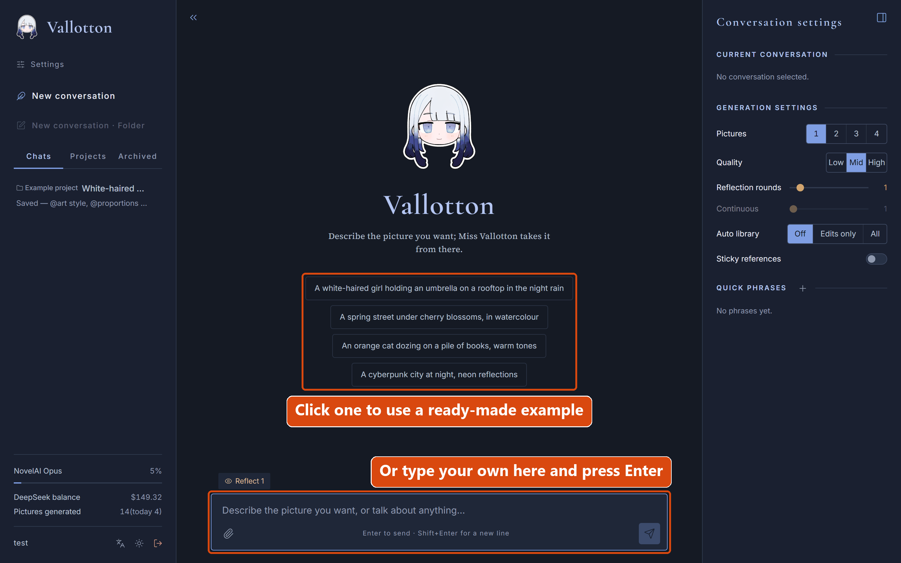
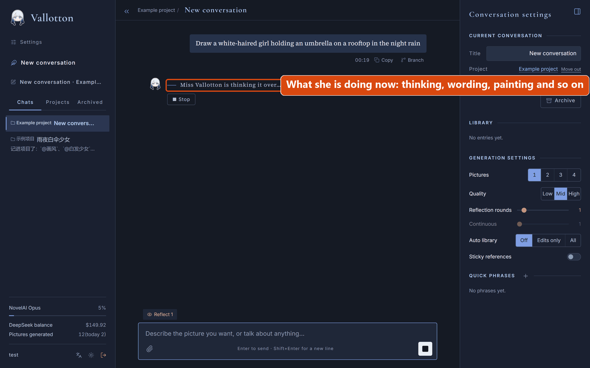
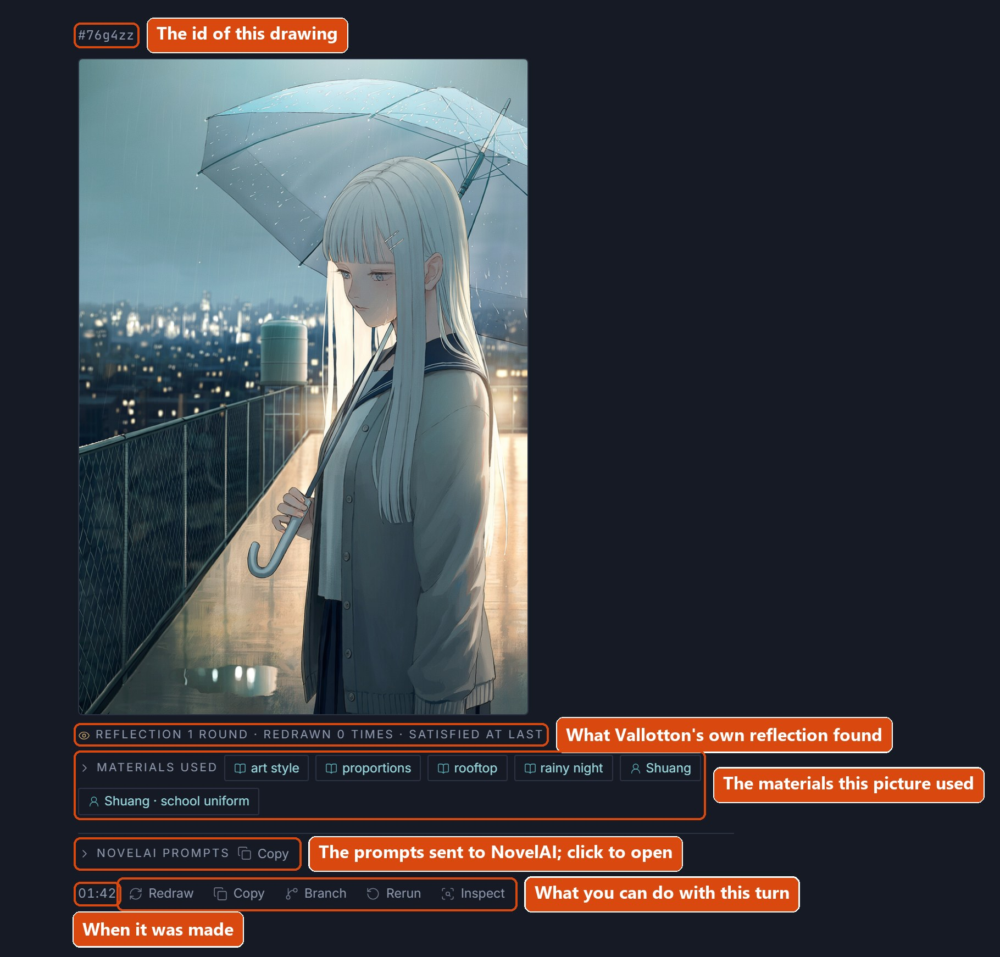
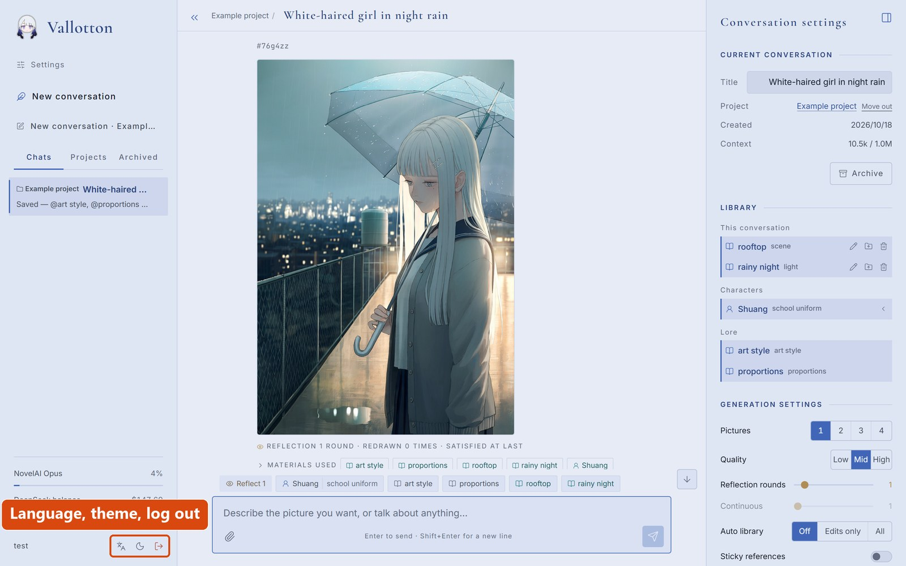

Quick start
This chapter is a step-by-step tutorial for the first time: get Vallotton running on your own computer and paint your first picture. It uses the portable start script that ships with the code, so there is almost nothing to set up by hand.
What you need
Two accounts
As the overview says more than once, Vallotton is a workflow that joins DeepSeek (or another LLM service) to NovelAI V5. Both are paid online services. You need an account with each, and from each account a key to give to Vallotton.
| Service | What it does | How to get the key |
|---|---|---|
| NovelAI | Paints the pictures. Needs a subscription, paid monthly. | Log in at novelai.net, open the user settings, go to the “Account” tab and find the “Get Persistent API Token” button. Clicking it shows a string starting with pst-; that is your NovelAI key. Once the dialog is closed the string is never shown again, so copy it somewhere safe first. |
| DeepSeek | Understands what you say, plans what to paint and how to change it. | Open platform.deepseek.com and register. Put a little credit on the account first (a few dollars lasts a long time), then create a key on the “API keys” page; you get a string starting with sk-. It is also shown only once, so copy it first. |
Roughly what it costs: NovelAI is a fixed monthly fee, and painting at the default quality costs nothing extra while the subscription lasts. DeepSeek is pay-as-you-go, around a cent per picture. Vallotton's settings page shows how much is left on each side.
Do I need to install anything?
Vallotton's backend is written in Python. The start script downloads and prepares the Python environment it needs by itself. Only if that automatic setup fails might you have to install Python by hand.
(If your computer already has Python, the script will not disturb it. The Python that Vallotton sets up is used only inside this project and never touches the system.)
Download and start
First download the code from GitHub. Then:
- Windows: open a command prompt in the Vallotton folder and run
start.bat --lang en. (Double-clickingstart.batworks too, but the terminal then speaks Chinese; the flag is what makes it speak English.) - macOS / Linux: open a terminal, go into the Vallotton folder and run
./start.sh --lang en(if the first run says permission denied, runchmod +x start.shfirst).
The start script does the following, in order:
- On the first run it prepares Python: if the computer already has Python 3.12 or newer, it uses that; otherwise it downloads a copy. Either way everything goes into the
.runtimefolder inside the Vallotton folder. This usually takes under a minute. - It checks that every component it needs is present.
- If the environment file does not exist yet, it creates one by asking you a few questions.
- It loads the environment file, starts the program and opens your browser.
The environment file
On the first run the script has to create the environment file, which means answering these four questions:
| Question | What to enter |
|---|---|
| DeepSeek API key | The string starting with sk- you got from DeepSeek above. |
| NovelAI persistent token | The string starting with pst- you got from NovelAI above. |
| Web login username | The name you will log in to the Vallotton web page with. Press Enter to use the default, “user”. |
| Web login password | The password for the web page. Choose one, type it and press Enter. |
When you have answered, the script saves everything to the .env file in the Vallotton folder and never asks again. If you change a key or want a new password later, open that file in a text editor, change the line, and start again.
The status panel
If all goes well, your browser opens on a login page (if it does not, open http://localhost:8000 yourself), and the command window turns into a status panel that looks roughly like this:

How to read it:
- Under Services, both lines green means the program is running.
- Under Accounts, the NovelAI line saying “valid” and the balance line showing a number means both keys are right. A red line means that key has a problem; see if something goes wrong.
- The address after Open is Vallotton's web address. If the browser did not open by itself, paste it into the address bar. Pressing o in the panel opens it too.
Keep this command window open for as long as Vallotton is running.
Log in
On the page the browser opened, enter the username and password you chose and press Log in. Vallotton is single-user for now: it accepts only the account created in the environment file, so there is no need (and no way) to share one installation with other people.

Paint the first picture

After logging in you see an empty welcome page that says “A fresh start. What shall we draw?”, with a few ready-made examples under it. Click one of them, or type a line of your own in the composer at the bottom of the page, for example:
Draw a white-haired girl holding an umbrella on a rooftop in the night rainPress Enter to send it.
Now wait a while. The page shows what Vallotton is actually doing. “Thinking it over” is the language model planning the picture, “weighing the words” is it translating the picture into a prompt NovelAI understands, and “putting brush to paper” is NovelAI painting. The first picture usually takes one to three minutes, most of it the model thinking.

When it is done, the picture appears in the reply. A few things worth noticing:
- Above the picture is a small line starting with #: the id of this drawing. You can refer to the picture by it, for example “change the style of #114514”.
- Under the picture, Materials used lists what the picture took from the library. The library is explained further down.
- Under the picture are a few buttons. Redraw paints again with the same NovelAI prompts; Rerun runs the whole process again; Branch starts a new conversation from this message; Inspect shows every detail of this round.

Change something
After the first picture, just keep typing in the composer. A message can ask for a new picture or for a change to one that exists. For example:
Make the umbrella red, and bring her a little closer to the cameraVallotton builds on the previous picture and changes as little as it can beyond what you asked for.

Vallotton remembers
When a character appears in a picture, Vallotton writes the character into this conversation's library on its own: what they look like, their hair colour, what they wear and so on. Whenever the character is painted again in this conversation, the painting follows what was written down. This is how the same character stays the same from picture to picture.
Besides characters, Vallotton also writes down the style this conversation uses, scenes that recur, and anything that stays true throughout (“it is always raining”), so a set of pictures does not change style from one to the next.
What has been remembered shows as chips above the composer. Rest the mouse on a chip (tap it on a phone) to see what it holds.

An entry made in one conversation (a character, say) belongs to that conversation. To use her in other conversations too, save the entry to the project from the right bar. The library section of the user guide explains this in detail; the quick start leaves it aside.
Language and theme
Next to the username at the bottom left are three buttons: switch the language (中文 or English), switch the theme (dark or light), and log out. The language belongs to the account, so it is the same wherever you log in; the theme belongs to the browser, so each device remembers its own. On a phone the two switches are on the first row of the settings page.

Stopping, and next time
At some point you will want to stop. You can close the local Vallotton service; the environment file and all your data stay where they are, and starting the service again next time carries on from there.- Stop: go back to the command window with the status panel and press q (Ctrl+C works too).
- Start again: exactly as the first time, run
start.bat --lang en(./start.sh --lang enon macOS / Linux). As long as the.envfile is still there, nothing has to be set up again. Conversations, pictures and the library are all kept. - Where things are: with the start script, everything lives inside the Vallotton folder. Conversations are in the file
tmp/dev.sqlite3, pictures in the foldertmp/media, keys and passwords in.env. - Closing the browser or the tab does not stop the service, nor interrupt a picture being painted; only closing the command window does.
If something goes wrong
A short checklist.
| What you see | Cause and what to do |
|---|---|
| The first run hangs on a download, or says “Could not download Python” | When the computer has no Python 3.12 or newer, the first run downloads about 40 MB. If there is no connection, or a proxy is needed, get the network or the proxy working first and run again. If a download broke off halfway, delete the .runtime folder inside the Vallotton folder and run again. |
| It says port 8000 is in use | The backend started by the start script listens on port 8000. This message means another program on the computer is using it. Start with a different port on the command line, for example 8020: start.bat --lang en --api-port 8020 on Windows, ./start.sh --lang en --api-port 8020 on macOS / Linux. The web address then becomes http://localhost:8020. |
| The NovelAI line in the panel is red | The NovelAI key is wrong, or the subscription has run out. Open the .env file in the Vallotton folder in a text editor, replace what follows NOVELAI_API_KEY= with the right key, save, and start again. |
| The model's balance in the panel reads “unknown”, or a message stays at “thinking it over” for ever | The DeepSeek key is wrong, the account has no credit, or the computer cannot reach DeepSeek's servers. Check the key and the balance at platform.deepseek.com first; if the key is wrong, change the DEEPSEEK_API_KEY= line in .env. |
| Painting fails and the error mentions “402” | The NovelAI account's points (Anlas) are used up, usually because the quality was set to “High”. In the generation settings on the right of the page, set the quality back to “Mid”. |
| The bottom right of the page says NovelAI “status unknown” | The endpoint that reports the NovelAI account's status is unreachable now and then. It does not affect painting and recovers by itself in a few minutes. |
| You want a detailed log | The files tmp/quickstart-后端.log (backend) and tmp/quickstart-前端.log (frontend) in the Vallotton folder hold the complete record. |
What next
- User guide: how to use everything, with the terms explained and a short account of how it works inside.
- Deployment: if you want Vallotton running all the time, reachable from any device including your phone, it needs to live on a server. That chapter is the full walkthrough.